전기철도기사 (2015-08-16 기출문제)
1과목: 전기철도공학
1. 전차선의 장력을 T, 단위길이당의 질량을 ρ라 할 때, 파동전파속도 C를 나타내는 식은?
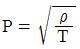
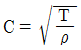
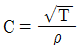
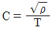
(정답률: 90%)

2. 커티너리 방식의 경우 가선계의 최고설계속도는 팬터 그래프에 의해 발생하는 가동전차선 동요임펄스 파동전파 속도의 몇 %이하가 되도록 하는가?
- 15
- 25
- 50
- 70
(정답률: 62%)
3. 급전계통의 분리 기준으로 거리가 먼 것은?
- 급전별 분리
- 본선간의 분리
- 본선과 측선의 분리
- 기기와 차량간의 분리
(정답률: 85%)
4. 고속전차선로 4경간의 에어섹숀에서 주축전주(2e 및 2i)쌍브래킷 가고의 조합으로 맞는 것은?
- 1.8[m]와 1.4[m]
- 2.0[m]와 1.3[m]
- 2.2[m]와 1.2[m]
- 2.4[m]와 1.0[m]
(정답률: 알수없음)
5. 제3궤조방식의 구성품으로 틀린 것은?
- 더블이어
- 급전레일 접합장치
- 습동 완화장치
- 신축 이음장치
(정답률: 85%)
6. 한 경간을 기준으로 해당 구간의 설계속도가 아래와 같을 때, 전차선의 기울기는?
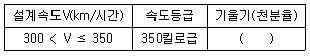
- 0
- 1
- 2
- 3
(정답률: 알수없음)
7. 선로가 곡선인 개소에서 차량이 선로외측으로 넘어지는 것을 막고 승차감을 좋게 하기 위하여 외측 레일을 내측 레일보다 높게 부설하는데, 이때의 높이차를 무엇이라 하는가?
- 슬랙9slack)
- 완화곡선
- 켄트(cant)
- 구배
(정답률: 알수없음)
8. 조가선과 전차선의 2조로 구성되고, 조가선으로 전차선을 궤도면에 대하여 평행이 되도록 하는 조가방식은?
- 반사조식
- 심플커티너리 조가방식
- 연사조식
- 사조식
(정답률: 90%)
9. 교류전기철도 지지물, 철구조물 등에 섬락하는 지락고장의 경우에 보호설비 방식이 아닌 것은?
- 보호선에 의한 방식
- 가공지선에 의한 방식
- 매설지선에 의한 방식
- 고장점 표정방식
(정답률: 73%)
10. 가공 전차선로에서 운전속도가 90[m/s]이고, 파동전파 속도가 100[m/s]일 때, 전차선로의 동적작용을 알 수 있는 도플러 계수는?
- 0.1
- 0.2
- 0.3
- 0.4
(정답률: 알수없음)
11. 고속철도에서 열차운행 속도가 250[km/h] 초과 일 때, 전차선의 구배 [‰]는?
- 3[‰]
- 2[‰]
- 1[‰]
- 0[‰]
(정답률: 알수없음)
12. 지상부의 가공 전차선이 터널내로 들어와 강체전차선으로 변경되는 부분에 설치하는 장치는?
- 흐름방지 장치
- 건널선 장치
- 익스팬션 죠인트
- 지상부 이행장치
(정답률: 60%)
13. 차량이 안전하게 운행될 수 있도록 궤도상에 설정한 일정 공간은?
- 차량한계
- 건축한계
- 열차한계
- 접촉한계
(정답률: 80%)
14. AT 급전방식에 대한 설명으로 옳은 것은?
- 전압강하가 크므로 변전소 이격거리가 짧다.
- 급전전압이 낮으므로 고장전류가 적어 보호가 어렵다.
- 고속 대용량 집전에 적합하다.
- 부스터 섹션에서 전기차 통과시 아크가 발생한다.
(정답률: 77%)
15. 건넘선장치의 설계시 고려사항으로 거리가 먼 것은?
- 건넘선 구간의 조가선 상호간 및 전차선 상호간, 조가선과 전차선을 일괄 균압한다.
- 건넘선 구간에서 팬터그래프의 본선 통과 시 측선 전차선 또는 금구류와 접촉하지 않도록 한다.
- 선로가 분기하는 개소에 적용하는 건넘선 장치는 설계속도, 선로조건, 전주위치, 경간, 가도, 편위, 선간 이격거리등을 고려하여 설계한다.
- 건넘선장치 교차점에서 본선측 궤도중심과 교측선측 전차선간의 간격 600[mm]내에 크램프를 설치한다.
(정답률: 67%)
16. 뢰의 파두장 5[㎲], 전파속도 500[m/㎲]라 할 때, 피뢰기의 직선적 유효보호범위[m]는?
- 850
- 900
- 1000
- 1250
(정답률: 80%)
17. 주전동기의 단자전압이 1200V, 전류가 300A인 경우, 전기차의 출력은 몇 [kW]인가? (단, 주전동기의 효율은 0.9, 전동기의 대수는 3대이다.)
- 648
- 810
- 972
- 1134
(정답률: 77%)
18. AT 급전방식에서 전차선과 급전선간의 표준전압(kV)은?
- 25
- 50
- 60
- 75
(정답률: 80%)
19. 직류귀선로의 전식방지 대책이 아닌 것은?
- 보조귀선을 설치
- 귀선저항을 작게
- 누설저항을 크게
- 누설전류를 크게
(정답률: 알수없음)
20. 일반 전차선로구간에서 전차선의 처짐 또는 과장력이 걸리는 것을 방지하기 위한 인류구간의 길이는 몇 [m]이하를 표준으로 하는가? (단, 직선구간을 기준으로)
- 1600
- 1800
- 2000
- 2200
(정답률: 37%)
2과목: 전기철도 구조물공학
21. 단면의 폭이 10cm, 높이가 20cm인 직사각형 단면과 지름이 d인 원형단면이 있다. 직사각형 단면과 원형단면의 단면계수가 같다고 할 때, 원형단면의 직경 [cm]은?
- 15.03
- 11.93
- 18.93
- 23.86
(정답률: 91%)
22. 길이 10m인 강재에 온도가 10℃에서 50℃로 변할 때, 온도에 의한 변형율은? (단, 강재의 탄성계수는 200GPa, 열팽창계수 α=1.0×10-5/℃이다.)
- 0.0002
- 0.0003
- 0.0004
- 0.00⑤
(정답률: 55%)
23. 전차선이 지표면상 6.78m에 설치되어 전차선의 횡장력에 의한 수평집중하중이 83.4kgf이고, 가동브래킷의 상부 밴드와 하부 밴드의 간격이 1m일 때 지면과 경계면에서 전차선의 횡장력 벤딩모멘트는 몇 [kgf⋅m]인가?
- 83.4
- 482.1
- 565.4
- 648.8
(정답률: 54%)
24. 단면적이 100mm2인 재료에 8kN의 전단력을 가했더니, 전단변형율이 0.001rad 발생하였을 때, 전단탄성계수 (횡탄성계수) G[GPa]는?
- 0.8
- 8
- 80
- 800
(정답률: 70%)
25. 전기철도구조물로 이용되는 단독 지지주의 강도 계산을 위한 설계 조건으로 가장 거리가 먼 것은?
- 급전방식과 가선방식
- 사용 전선의 종류와 굵기
- 전선에 가해지는 장력
- 통신선로의 유도장해
(정답률: 84%)
26. 탄성한도 내에서 봉에 축방향으로 단면에 균일한 인장력이 작용할 때, 봉의 체적 변형율 ?v은? (단, ?은 봉의 종변형율, v는 포아송 비이다.)
- ?(1-v)
- ?(1-2v)
- ?(1+v)
- ?(1+2v)
(정답률: 알수없음)
27. 전철구조물 설계하중에서 응력계산시 가동브래킷의 이동 수평하중에 적용되는 하중은?
- 수평 분포하중
- 수직 편심하중
- 수평 집중하중
- 수직 양심하중
(정답률: 70%)
28. 지표상 8m 지점에 수평인장력이 660kg인데, 지선을 6m 떨어져 지지하려고 한다. 이 때 지선에 걸리는 장력은 몇 [kg]인가?
- 980
- 1100
- 1260
- 1500
(정답률: 알수없음)
29. 단면 모멘트 및 도심에 대한 설명 중 틀린 것은?
- 단면 1차모멘트는 좌표축에 따라 (+), (-)의 부호를 갖는다.
- 도심을 지나는 축에 대한 단면 1차모멘트는 0이다.
- 단면 2차모멘트의 최솟값은 도심에 대한 것이며, 0은 아니다.
- 도형의 도심은 질량이나 중력에 따라 다르다.
(정답률: 50%)
30. 그림과 같은 강재(L-65×65×6)의 단면에 20t의 인장력이 작용할 때, 이 강재의 늘음량[mm]은? (단, 영계수 E=2.1×106kg/cm2, A=7.64cm2)
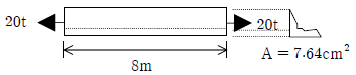
- 7.25
- 7.57
- 9.25
- 9.97
(정답률: 알수없음)
31. 비례한도에 대한 설명으로 맞는 것은?
- 응력과 변형율이 비례하는 최대점
- 응력의 발생으로 변형을 일으켜 파괴하는 한계
- 인장시험에 있어서 작용하는 최대 하중점
- 응력의 증가에 대하여 변형이 갑자기 증가하는 한계점
(정답률: 알수없음)
32. 풍속이 30m/s이고, 바람을 받는 콘크리트 전주의 수직 투영면적이 3m2일 때, 콘트리트 전주에 가해지는 풍압은 약 몇 [kgf]인가? (단, 풍력계수는 1.3이다.)
- 55
- 109
- 219
- 439
(정답률: 39%)
33. 두 힘의 합력은 약 몇 [t]인가?
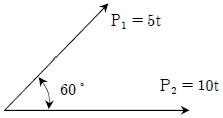
- 12.2
- 13.2
- 14.5
- 15.5
(정답률: 80%)
34. 전차선은 온도와 장력의 변화에 따라서 이동하지만 온도에 따른 이동만 고려하면 이동량 [mm]은? (단, 전차선팽창계수=1.7×10-5/℃, 최고온도 40℃, 전차선장력 조정 길이 750m)
- 288
- 383
- 458
- 553
(정답률: 알수없음)
35. 지점(支點, support)에 대한 설명으로 옳은 것은?
- 고정지점은 이동은 할 수 없으나 회전은 가능하다.
- 지점에는 이동지점, 고정지점 및 모멘트지점이 있다.
- 이동지점에서 반력은 수직한 방향으로 1개만 일어난다.
- 회전하고 있는 구조물 또는 부재를 받치는 점을 지점이라 한다.
(정답률: 82%)
36. 직경 20[mm], 길이 2[m]인 봉에 20[t]의 인장력을 작용시켰더니 길이가 2.08[m], 직경이 19.8[mm]로 되었다면 포아송 비(Poisson’s ratio)는?
- 0.25
- 0.5
- 2
- 4
(정답률: 알수없음)
37. 그림과 같은 단면의 X - X 축에 대한 단면차모멘트[cm3]는? (단, 치수 단위는 [cm])
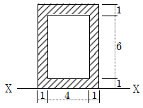
- 48
- 96
- 144
- 192
(정답률: 알수없음)
38. 그림과 같은 보의 단부 A점에서의 휨모멘트는?
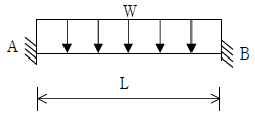
- wL2/6
- wL2/12
- wL2/24
- wL2/48
(정답률: 알수없음)
39. 전기철도 구조물에서 고정지점의 반력수는?
- 1개
- 2개
- 3개
- 4개
(정답률: 91%)
40. 구조물 판별에서 트러스의 부정정 차수가 m＞2k-3이면? (단, m:부재수, k :절점수)
- 불안정
- 정적
- 내적 부정정
- 외적 부정정
(정답률: 알수없음)
3과목: 전기자기학
41. 패러데이의 법칙에 대한 설명으로 가장 적합한 것은?
- 정전유도에 의해 회로에 발생하는 기자력은 자속의 변화 방향으로 유도된다.
- 정전유도에 의해 회로에 발생되는 기자력은 자속 쇄교수의 시간에 대한 증가율에 비례한다.
- 전자유도에 의해 회로에 발생되는 기전력은 자속의 변화를 방해하는 반대 방향으로 기전력이 유도된다.
- 전자유도에 의해 회로에 발생하는 기전력은 자속 쇄교수의 시간에 대한 변화율에 비례한다.
(정답률: 알수없음)
42. 유도 기전력의 크기는 폐회로에 쇄교하는 자속의 시간적 변화율에 비례하는 정량적인 법칙은?
- 노이만의 법칙
- 가우스의 법칙
- 암페어의 주회적분 법칙
- 플레밍의 오른손 법칙
(정답률: 알수없음)
43. 전기력선의 성질에 대한 설명 중 옳은 것은?
- 전기력선은 도체 표면과 직교한다.
- 전기력선은 전위가 낮은 점에서 높은 점으로 향한다.
- 전기력선은 도체 내부에 존재할 수 있다.
- 전기력선은 등전위면과 평행하다.
(정답률: 47%)
44. 한 변의 저항이 Ro인 그림과 같은 무한히 긴 회로에서 AB 간의 합성저항은 어떻게 되는가?
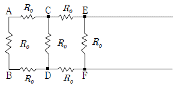
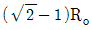
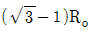
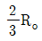
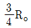
(정답률: 59%)
45. 반지름 a, b(b＞a)(m)의 동심 구도체 사이에 유전율 ?(F/m)의 유전체가 채워졌을 때의 정전 용량은 몇 F인가?
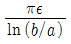
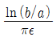
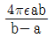
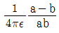
(정답률: 60%)
46. 맥스웰의 전자방정식 중 패러데이 법칙에서 유도된 식은? (단, D:전속밀도, ρv:공간 전하밀도, B:자속밀도, E:전계의 세기, J:전류밀도, H:자계의 세기이다.)
- divD=ρv
- divB=0
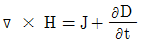
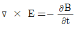
(정답률: 알수없음)
47. 높은 전압이나, 낙뢰를 맞는 자동차 안에는 승객이 안전한 이유가 아닌 것은?
- 도전성 용기 내부의 장은 외부 전하나 자장이 정지 상태에서 영(ZERO)이다.
- 도전성 내부 벽에는 음(-)전하가 이동하여 외부에 같은 크기의 양(+)전하를 준다.
- 도전성인 용기라도 속빈 경우에 그 내부에는 전기장이 존재하지 않는다.
- 표면의 도전성 코팅이나 프레임 사이에 도체의 연결이 필요 없기 때문이다.
(정답률: 알수없음)
48. 지름 2mm, 길이 25m인 동선의 내부 인턱턴스는 몇 μH인가?
- 1.25
- 2.5
- 5.0
- 25
(정답률: 39%)
49. Q(C)의 전하를 가진 반지름 a(m)의 도체구를 유전율 ?(F/m)의 기름 탱크로부터 공기 중으로 빼내는데 요하는 에너지는 몇 J인가?
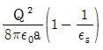
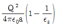
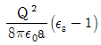
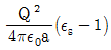
(정답률: 알수없음)
50. 특성임피던스가 각각 η1, η2인 두 매질의 경계면에 전자파가 수직으로 입사할 때, 전계가 무반사로 되기 위한 가장 알맞은 조건은?
- η2=0
- η1=0
- η1=η2
- η1·η2=1
(정답률: 65%)
51. 전계 E(V/m)가 두 유전체의 경계면에 평행으로 작용하는 경우 경계면의 단위면적당 작용하는 힘은 몇 N/M2인가? (단, ?1, ?2는 두 유전체의 유전율이다.)
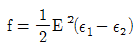
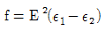
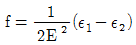
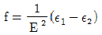
(정답률: 60%)
52. 비투자율 350인 환상철심 중의 평균 자계의 세기가 280AT/m일 때, 자화의 세기는 약 몇 Wb/m2인가?
- 0.12
- 0.15
- 0.18
- 0.21
(정답률: 알수없음)
53. 2C의 점전하가 전계 E=2ax+ay-4az(V/m) 및 자계 B=-2ax+2ay-az(WB/m2) 내에서 속도 v=4ax-ay-2az(m/s)로 운동하고 있을 때, 점전하에 작용하는 힘 F는 몇 N인가?
- -14ax+18ay+6az
- 14ax-18ay-6az
- -14ax+18ay+4az
- 14ax+18ay+4az
(정답률: 알수없음)
54. 무한 평면도체로부터 거리 a(m)인 곳에 점전하 Q(C)가 있을 때, 도체 표면에 유도되는 최대전하밀도는 몇 C/m2인가?
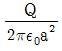
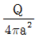
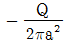
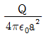
(정답률: 알수없음)
55. 다음 설명 중 옳은 것은?
- 자계 내의 자속밀도는 벡터포텐셜을 폐로선적분하여 구할 수 있다.
- 벡터포텐셜은 거리에 반비례하며 전류의 방향과 같다.
- 자속은 벡터포텐셜의 curl을 취하면 구할 수 있다.
- 스칼라포텐셜은 정전계와 정자계에서 모두 정의되나 벡터포텐셜은 정전계에서만 정의된다.
(정답률: 알수없음)
56. 자속밀도가 0.3Wb/m2인 평등자계 내에 5A의 전류가 흐르고 있는 길이 2m인 직선도체를 자계의 방향에 대하여 60°의 각도로 놓았을 때, 이 도체가 받는 힘은 약 몇 N인가?
- 1.3
- 2.6
- 4.7
- 5.2
(정답률: 60%)
57. 아래의 그림과 같은 자기회로에서 A부분에만 코일을 감아서 전류를 인가할 때의 자기저항과 B 부분에만 코일을 감아서 전류를 인가할 때의 자기저항(AT/Wb)을 각각 구하면 어떻게 되는가? (단, 자기저항 R1=3AT/Wb, R2=1AT/WB, R3=2AT/WB이다.)
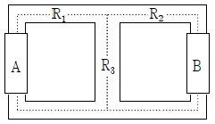
- RA=2.20, RB=3.67
- RA=3.67, RB=2.20
- RA=1.43, RB=2.83
- RA=2.20, RB=1.43
(정답률: 70%)
58. 5000㎌의 콘덴서를 60V로 충전시켰을 때, 콘덴서에 축적되는 에너지는 몇 J인가?
- 5
- 9
- 45
- 90
(정답률: 46%)
59. 평면 전자파가 유전율 ?, 투자율 μ인 유전체 내를 전파한다. 전계의 세기가
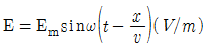
라면 자계의 세기 H(AT/m)는?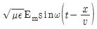
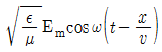
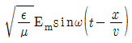
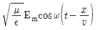
(정답률: 알수없음)
60. 반지름 a[m]의 원형 단면을 가진 도선에 전도전류 ic=Icsin2πft[A]가 흐를 때, 변위전류밀도의 최댓값 Jd는 몇 [A/m2]가 되는가? (단, 도전율은 σ[S/m]이고, 비유전율은 ?r이다.
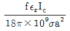
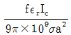
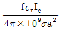
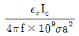
(정답률: 54%)
4과목: 전력공학
61. 유량의 크기를 구분할 때 갈수량이란?
- 하천의 수위 중에서 년을 통하여 355일간 이보다 내려가지 않는 수위
- 하천의 수위 중에서 년을 통하여 275일간 이보다 내려가지 않는 수위
- 하천의 수위 중에서 년을 통하여 185일간 이보다 내려가지 않는 수위
- 하천의 수위 중에서 년을 통하여 95일간 이보다 내려가지 않는 수위
(정답률: 50%)
62. 22.9kV, Y결선된 자가용 수전설비의 계기용변압기의 2차측 정격전압은 몇 V인가?
- 110
- 190
- 110√3
- 190√3
(정답률: 알수없음)
63. 송전단전압이 3.4kV, 수전단전압이 3kV인 배전선로 에서 수전단의 부하를 끊은 경우의 수전단전압이 3.2kV로 되었다면, 이때의 전압변동률은 약 몇 %인가?
- 5.88
- 6.25
- 6.67
- 11.76
(정답률: 34%)
64. 송전선로에서 변압기의 유기 기전력에 의해 발생하는 고조파중 제 3고조파를 제거하기 위한 방법으로 가장 적당한 것은?
- 변압기를 Δ결선한다.
- 동기조상기를 설치한다.
- 직렬 리액터를 설치한다.
- 전력용 콘덴서를 설치한다.
(정답률: 42%)
65. 전력계통에서 무효전력을 조정하는 조상설비 중 전력용 콘덴서를 동기조상기와 비교할 때, 옳은 것은?
- 전력손실이 크다.
- 지상 무효전력분을 공급할 수 있다.
- 전압조정을 계단적으로 밖에 못한다.
- 송전선로를 시송전할 때 선로를 충전할 수 있다.
(정답률: 50%)
66. 제 5고조파 전류의 억제를 위해 전력용 콘덴서에 직렬로 삽입하는 유도 리액턴스의 값으로 적당한 것은?
- 전력용 콘덴서 용량의 약 6% 정도
- 전력용 콘덴서 용량의 약 12% 정도
- 전력용 콘덴서 용량의 약 18% 정도
- 전력용 콘덴서 용량의 약 24% 정도
(정답률: 알수없음)
67. 송전계통의 절연 협조에 있어 절연레벨을 가장 낮게 잡고 있는 기기는?
- 차단기
- 피뢰기
- 단로기
- 변압기
(정답률: 60%)
68. 송전계통에서 절연 협조의 기본이 되는 것은?
- 애자의 섬락전압
- 권선의 절연내력
- 피뢰기의 제한전압
- 변압기 붓싱의 섬락전압
(정답률: 50%)
69. 한류 리액터를 사용하는 가장 큰 목적은?
- 충전전류의 제한
- 접지전류의 제한
- 누설전류의 제한
- 단락전류의 제한
(정답률: 알수없음)
70. 보호계전기의 반한시·정한시 특성은?
- 동작전류가 커질수록 동작시간이 짧게 되는 특성
- 최소 동작전류 이상의 전류가 흐르면 즉시 동작하는 특성
- 동작전류의 크기에 관계없이 일정한 시간에 동작하는 특성
- 동작전류가 적은 동안에는 동작전류가 커질수록 동작 시간이 짧아지고 어떤 전류 이상이 되면 동작전류의 크기에 관계없이 일정한 시간에서 동작하는 특성
(정답률: 59%)
71. 송전선로의 코로나 방지에 가장 효과적인 방법은?
- 전선의 높이를 가급적 낮게 한다.
- 코로나 임계전압을 낮게 한다.
- 선로의 절연을 강화한다.
- 복도체를 사용한다.
(정답률: 알수없음)
72. 전압 V1(kV)에 대한 % 리액턴스 값이 Xp1이고, 전압 V2(kV)에 대한 % 리액턴스 값이 p2일 때, 이들 사이의 관계로 옳은 것은?
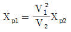
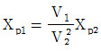
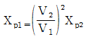
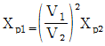
(정답률: 59%)
73. 송전선로의 수전단을 단락한 경우 송전단에서 본 임피던스가 300Ω이고, 수전단을 개방한 경우에는 900Ω일 때, 이 선로의 특성임피던스 Z0(Ω)는 약 얼마인가?
- 490
- 500
- 510
- 520
(정답률: 46%)
74. 송전계통의 안정도를 증진시키는 방법이 아닌 것은?
- 속응 여자방식을 채택한다.
- 고속도 재폐로 방식을 채용한다.
- 발전기나 변압기의 리액턴스를 크게 한다.
- 고장전류를 줄이고 고속도 차단방식을 채용한다.
(정답률: 58%)
75. 15kV 송전선로에서 송전거리가 154km라 할 때, 송전용향 계수법에 의한 송전용량은 몇 kW인가? (단, 송전용향 계수는 1200으로 한다.)
- 61600
- 92400
- 123200
- 184800
(정답률: 알수없음)
76. 기력발전소 내의 보조기 중 예비기를 가장 필요로 하는 것은?
- 미분탄송입기
- 급수펌프
- 강제통풍기
- 급탄기
(정답률: 알수없음)
77. 송전계통의 중성점을 직접 접지할 경우 관계가 없는 것은?
- 과도안정도 증진
- 계전기 동작 확실
- 기기의 절연수준 저감
- 단절연변압기 사용 가능
(정답률: 47%)
78. 22.9kV, Y가공배전선로에서 주 공급선로의 정전사고 시예비전원 선로로 자동 전환되는 개폐장치는?
- 기중부하 개폐기
- 고장구간 자동 개폐기
- 자동선로 구분 개폐기
- 자동부하 전환 개폐기
(정답률: 알수없음)
79. 각 수용가의 수용률 및 수용가 사이의 부등률이 변화할 때, 수용가군 총합의 부하율에 대한 설명으로 옳은 것은?
- 수용률에 비례하고 부등률에 반비례한다.
- 부등률에 비례하고 수용률에 반비례한다.
- 부등률과 수용률에 모두 반비례한다.
- 부등률과 수용률에 모두 비례한다.
(정답률: 47%)
80. 일반적으로 화력발전소에서 적용하고 있는 열사이클 중 가장 열효율이 좋은 것은?
- 재생사이클
- 랭킨사이클
- 재열사이클
- 재생재열사이클
(정답률: 70%)
파동전파속도 C는 T와 ρ에 의해 결정된다. 전차선의 장력 T는 파동이 전달되는 물체의 탄성에 의해 결정되며, 단위길이당의 질량 ρ는 물체의 밀도에 의해 결정된다. 따라서 T와 ρ가 클수록 파동전파속도 C는 빠르다. 이를 수식으로 나타내면 C = √(T/ρ)이다.